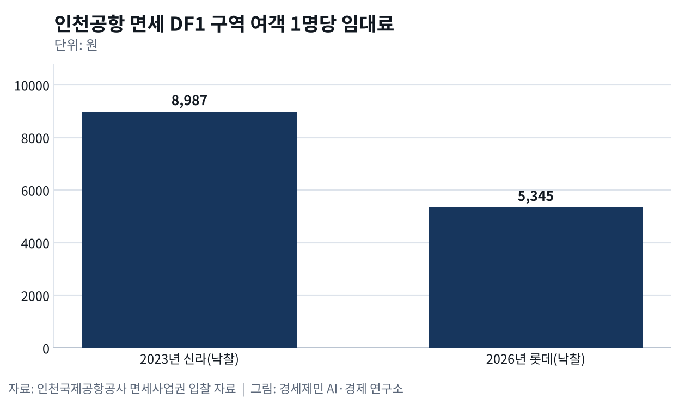
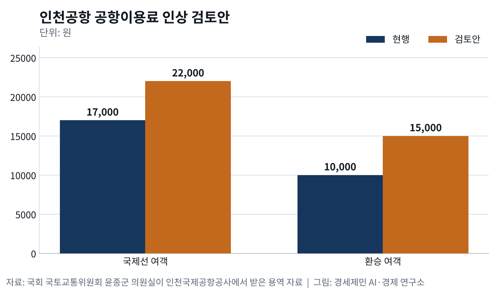
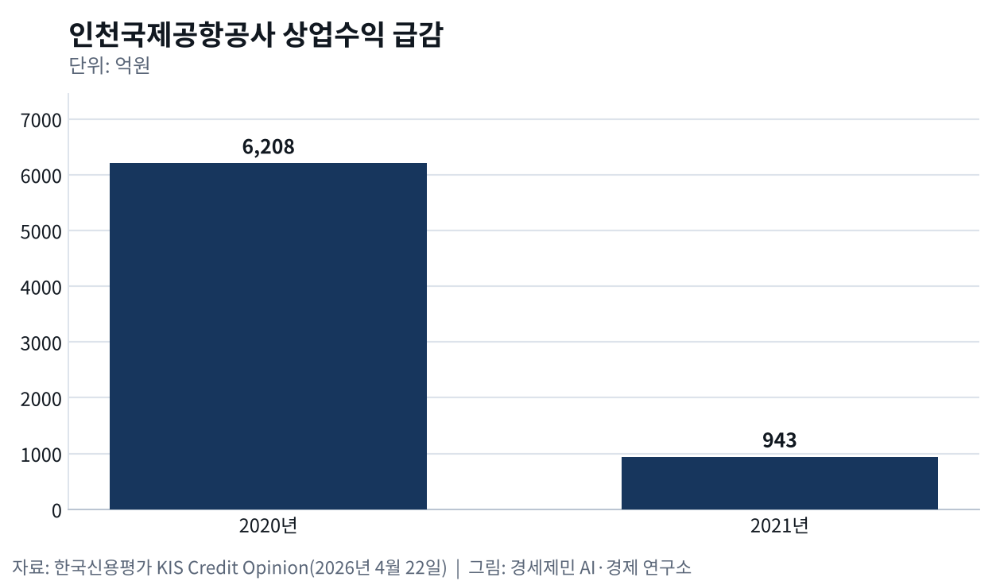

면세 임대료 41%↓ 인천공항, 다음 금고는 항공사다
- 면세 객당 임대료 8987원→5345원
- 공항이용료 1만7000원→2만2000원 인상 검토
- 항공사 인센티브 2008년부터, 지난해 57억원
인천공항 면세점 임대료가 41% 내려갔다. 인천국제공항공사가 지난해 12월 11일 낸 입찰공고를 보면 향수·화장품 구역(DF1)과 주류·담배 구역(DF2) 최저 임대료를 여객 1명당 5031원과 4994원으로 낮춰 잡았다.

신라와 신세계가 사업권을 중간에 내놓은 자리였다. 관세청은 2월 26일 DF1에 롯데면세점, DF2에 현대면세점을 뽑았다. 롯데는 4월 17일, 현대는 4월 28일 문을 열었다.
롯데가 DF1에서 내는 임대료는 여객 1명당 5345원이다. 신라가 2023년 같은 구역을 따낼 때 써낸 8987원보다 41% 낮다. 여객 1명당 값에 여객 수를 곱해 매기는 이 방식을 객당 임대료라 한다.
면세가 받치던 공항 살림이 흔들리자 공사는 공항 이용료 인상을 검토한다. 그러나 공항이 돈을 버는 첫 상대는 항공사다. 면세 다음 금고를 항공사에서 찾아야 하는 까닭을 짚는다.
면세 감면에 상업수익 943억원, 3년 적자
한국신용평가가 4월 22일 낸 평가서를 보면 공사 상업수익은 2020년 6208억원에서 2021년 943억원으로 줄었다. 상업수익은 면세점과 식당, 주차처럼 항공 밖에서 버는 돈이다.
코로나19로 여객이 끊기고 면세점 임대료를 깎아 주면서 매출 가운데 가장 크게 줄었다. 공사는 2020년부터 3년 내리 영업적자(본업에서 본 손해)를 냈다. 2021년 적자는 9000억원을 넘었다.

공사는 여객이 크게 늘어난 2023년 흑자로 돌아섰다. 2025년 상업수익에는 신라와 신세계가 사업권을 일찍 반납하며 낸 위약금 3800억원가량이 들어 있다. 한국신용평가는 사업자가 바뀌고 여객 1명당 임대료가 내려가 앞으로 몇 해 임대료 수익이 줄 것으로 내다봤다.
관광객 21% 늘어도 면세 매출 1.8%
한국면세점협회 집계를 보면 올해 상반기 국내 면세점 매출은 6조4752억원으로 1년 전보다 1.8% 늘었다. 같은 기간 한국을 찾은 외국인 관광객은 1070만9919명으로 21.3% 늘었다.
외국인 1명당 구매액은 75만1900원으로 3.2% 줄었고 내국인 매출은 12% 줄었다. 관광객은 늘었지만 면세점 지갑은 열리지 않았다.
업계는 관광객이 단체 일정 대신 자유여행으로 원하는 매장을 직접 찾고, 높은 환율로 면세 가격 매력도 떨어졌다고 봤다. 신라는 고객 소비 습관이 바뀌고 구매력이 줄었다며 사업권을 내려놓았다.
공항이용료 29%↑ 검토, 면세 빈자리 메우기
공사는 요금을 올리는 쪽을 검토한다. 국회 국토교통위원회 윤종군 의원실이 공사에서 받은 용역 자료를 보면 국제선 여객 공항이용료를 1만7000원에서 2만2000원으로 29.4% 올리는 안이 들어 있다.

환승 여객 이용료는 1만원에서 1만5000원으로 50% 올리는 안이다. 착륙료처럼 항공사가 내는 운항사용료도 손본다. 지금은 원가 대비 44%만 받는데 이를 88%까지 높이는 방안을 항공사와 협의할 계획이다.
공사는 면세점 수입이 줄었고 앞으로 10년 동안 시설 투자에 최대 18조원이 든다고 설명했다. 국제선 여객 이용료는 2002년부터 그대로였다. 시행 여부와 시기는 아직 정해지지 않았다.
공항 첫 고객은 항공사
공항에는 고객이 둘이다. 비행기를 띄우는 항공사와 공항을 드나드는 승객이다. 영국 공항경영학자 앤 그레이엄은 교과서 『공항 경영(Managing Airports)』에서 공항과 항공사 관계를 따로 한 장으로 다룬다.
항공사가 비행기를 띄워야 승객이 오고, 승객이 와야 면세점도 번다. 유럽 공항 200곳을 조사한 연구진은 2012년 공항 요금이 항공사 운영비에서 최대 10%를 차지해 노선 수익을 가를 수 있다고 밝혔다.
항공사를 부르는 공항이 성과도 좋았다. 세계 124개 공항을 조사한 2016년 연구는 노선 유치에 힘쓴 공항일수록 성과가 유의하게 좋았다고 밝혔다.
착륙료 깎아 항공사 부르기

인천공항도 2008년부터 항공사 인센티브를 운영한다. 새로 취항하거나, 붐비지 않는 시간대에 띄우거나, 환승객을 많이 실어 오는 항공사에 착륙료를 돌려주고 마케팅비를 지원한다.
지원액은 2024년 44억원가량에서 지난해 57억원가량으로 늘었다. 6000km 넘는 장거리 노선을 새로 여는 항공사에는 2년 동안 착륙료를 모두 지원한다고 공사는 1월 밝혔다.
효과는 엇갈린다. 일본 나리타공항을 분석한 2021년 연구는 나리타 인센티브가 새 노선을 끌어오고 공항과 관광 수입을 늘렸다고 봤다. 유럽 400여 공항을 살핀 연구는 인센티브가 직항 연결을 늘렸다는 증거가 제한적이라고 했다. 인센티브만으로 항공사를 붙잡기는 어렵다.
한 금고냐 두 금고냐, 다음 금고는 항공사
공항 요금을 정하는 방식은 둘로 나뉜다. 면세점 같은 상업 수입까지 한데 묶어 항공 요금을 정하는 단일 금고(single till), 항공과 상업을 따로 셈하는 이중 금고(dual till)다.
두 경제학자는 1997년 논문에서 공항 전체 살림을 맞추는 조건이라면 상업 수입으로 항공 쪽을 돕는 것이 가장 나을 수 있다고 밝혔다. 영국 공항경제학자 데이비드 스타키는 2001년 항공 수요와 상업 수요가 맞물려 큰 공항은 운항을 늘릴 유인이 생긴다고 봤다.
인천은 그동안 항공사에 원가 대비 44%만 받고 모자란 돈을 면세 같은 상업 수입으로 채웠다. 면세가 줄었다고 요금부터 올리면 항공사 발길이 줄 수 있다. 환승 이용료 50% 인상은 환승 허브 목표와 부딪칠 수도 있다.
요금을 현실화하더라도 장거리·신규 노선 인센티브와 함께 가야 한다. 면세 다음 금고는 주차장이 아니라 인천에 비행기를 더 띄우는 항공사다.
※ 이 기사는 AI 프로그램 클로드를 활용해 작성했습니다.
이 기사는 인공지능을 활용해 작성했습니다. 사실관계는 저자가 확인했습니다.
참고문헌
기관 자료
- 인천국제공항공사, "인천공항공사, 2개 면세사업권(DF1, DF2) 신규사업자 선정 입찰공고", 2025년 12월 11일. https://www.airport.kr/bbs/co_ko/84/139127/artclView.do
- 인천국제공항공사, "인천공항, 겨울 시즌 온오프라인 면세 프로모션 개시", 2025년 12월 15일. https://www.airport.kr/bbs/co_ko/84/139134/artclView.do
- 인천국제공항공사, "인천공항공사, 면세사업권 입찰 결과 발표", 2026년 1월 30일. https://www.airport.kr/bbs/co_ko/84/139224/artclView.do
- 한국신용평가, 「인천국제공항공사 평가보고서」, 평가일 2023년 7월 19일. https://kisrating.com/fileDown.do?menuCd=R8&gubun=2&fileName=rs20230719-20.pdf
- 한국신용평가, 「KIS Credit Opinion 인천국제공항공사」, 평가일 2026년 4월 22일. https://m.kisrating.com/fileDown.do?menuCd=R8&gubun=2&fileName=rs20260422-19.pdf
- 인천국제공항공사, "버진애틀랜틱 항공 인천공항 신규취항. 인천런던 노선 6년만에 매일 운항", 2026년 4월 14일. https://www.airport.kr/bbs/co_ko/84/139330/artclView.do
- 인천국제공항공사, 「여객항공사 인센티브 제도 안내」(시행 2024년 1월 1일~2025년 12월 31일). https://airport.kr/sites/co_en/down/passenger_hebair_ko.pdf
연구 논문
- Graham, A., 『Managing Airports: An International Perspective』 6판, Routledge, 2023년(4장 The airport–airline relationship).
- Zhang, A., & Zhang, Y., "Concession revenue and optimal airport pricing", 『Transportation Research Part E』 33(4), 1997년 12월, pp.287-296. https://ideas.repec.org/a/eee/transe/v33y1997i4p287-296.html
- Starkie, D., "Reforming UK Airport Regulation", 『Journal of Transport Economics and Policy』 35(1), 2001년 1월, pp.119-135. https://ideas.repec.org/a/tpe/jtecpo/v35y2001i1p119-135.html
- Malina, R., Albers, S., & Kroll, N., "Airport Incentive Programmes: A European Perspective", 『Transport Reviews』 32(4), 2012년, pp.435-453. https://doi.org/10.1080/01441647.2012.684223
- Halpern, N., & Graham, A., "Factors affecting airport route development activity and performance", 『Journal of Air Transport Management』 56(B), 2016년, pp.69-78. https://doi.org/10.1016/j.jairtraman.2016.04.016
- Feng, J., Wu, C.-L., & Zhu, J., "Exploring the effect of airport incentive programs: the practice of Narita International Airport", 『Transportation Planning and Technology』 44(7), 2021년 10월, pp.785-806. https://doi.org/10.1080/03081060.2021.1956812
- Warnock-Smith, D., Dziedzic, M., & Christidis, P., "Assessing the impact of airport incentive schemes on regional air connectivity differentials across Europe", 『Transport Policy』 162, 2025년, pp.106-112. https://doi.org/10.1016/j.tranpol.2024.11.022
언론기사
- 박연직, "인천공항 면세점 신세계·신라 등 선정", 세계일보, 2023년 3월 17일. https://www.segye.com/newsView/20230317513609
- 김동호, "인천공항 '면세점 임대료 감액 요청, 경영책임 회피' 비판", 파이낸셜뉴스, 2025년 8월 12일. https://www.fnnews.com/news/202508120822267665
- 이다빈, "호텔신라 떠난 인천공항 DF1…위험수위 치닫는 免 '임대료 리스크'", 쿠키뉴스, 2025년 9월 19일. https://v.daum.net/v/20250919154022211
- 박준철, "'적자' 신라·신세계가 반납한 인천공항 면세점 임대료 낮춰 입찰", 경향신문, 2025년 12월 11일. https://www.khan.co.kr/article/202512111124001
- 손원태, "인천공항 면세점 들어가는 현대·롯데, '승자의 저주' 비껴갈까", 더팩트, 2026년 1월 30일. https://news.tf.co.kr/read/economy/2287480.htm
- 홍찬선, "인천공항 면세점 DF1·DF2 사업자 바뀐다…롯데 17일·현대 28일 오픈", 뉴시스, 2026년 4월 8일. https://mobile.newsis.com/view/NISX20260408_0003582278
- 유엄식, "3년만에 인천공항 복귀… 롯데면세점, 오늘 문연다", 머니투데이, 2026년 4월 17일. https://www.mt.co.kr/living/2026/04/17/2026041620041387569
- 김소희, "현대면세점, 인천국제공항 화장품·주류 면세점 문 열다", 뉴스퀘스트, 2026년 4월 28일. https://www.newsquest.co.kr/news/articleView.html?idxno=265497
- 권재희, "'인천공항만 북적이면 뭐 하나' 돈방석은 없었다…'객당 8987원'에 앓더니 결국 1000억원대 소송전", 아시아경제, 2026년 6월 22일. https://www.asiae.co.kr/article/2026061215541683527
- 김정환, "방한객·관광 소비 동반 증가…상반기 1071만 명·지출 10조원", 뉴시스, 2026년 7월 28일. https://www.newsis.com/view/NISX20260728_0003726603
- 유예림, "면세점 살린 외국인… 상반기 664만명 '5조' 썼다", 머니투데이, 2026년 7월 30일. https://www.mt.co.kr/industry/2026/07/30/2026072919580144111
- 임혜선, "외국인 관광객 몰려왔는데…면세점 매출은 '제자리'", 아시아경제, 2026년 7월 31일. https://www.asiae.co.kr/article/2026073007524993438
- "인천공항, 취항 항공사 100개 돌파", 아주경제, 2026년 1월 28일. https://www.ajunews.com/view/20260128093348459
- "인천공항 취항사 100개 넘어서…개항 25년만에 2배 '훌쩍'", 트윅, 2026년 1월 28일. https://www.twig24.com/news/2026/01/28/20260128500077
- "인천공항, 항공사 인센티브 강화…'외래 관광객 3000만 명 목표 지원'", 이투데이, 2026년 4월 30일. https://www.etoday.co.kr/news/view/2580903
- "인천공항, 항공사 협력강화로 외래객 3천만 시대 앞당긴다", 경기일보, 2026년 5월 3일. https://www.kyeonggi.com/article/20260503580148
- "인천공항, 24년 묶인 국제선 이용료 5000원 인상 검토…1만7000→2만2000원", 이투데이, 2026년 10월 7일. https://www.etoday.co.kr/news/view/2633573
- "인천공항, 국제선 이용료 5000원 인상 검토…24년 만에 올릴까?", 국민일보, 2026년 10월 7일. https://www.kmib.co.kr/article/view.asp?arcid=9000020633
- "인천공항, 국제여객이용료·운항사용료 인상 검토…파장 예고", 경기일보, 2026년 10월 7일. https://www.kyeonggi.com/article/20261007580080